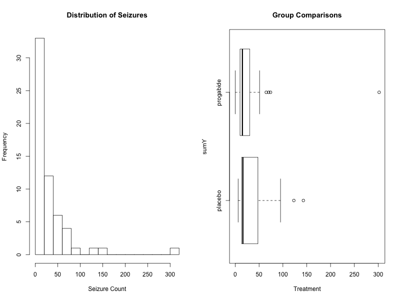

广义线性模型
1 广义线性模型介绍
1.1 广义线性的组成
- 广义线性建模是统计分析框架，线性回归和logistic回归是广义线性模型的特例。
- 广义线性模型的组成包括：
- 响应向量 \(y=(y_1,...,y_n)\)
- 预测变量 $X$和系数 \(\beta\) ，形成线性组合 \(X\beta\)
- 连接函数（link function） \(g\) ，生成一个向量 \(\hat y=g^{-1}(X\beta)\)
- 响应变量的条件分布 \(p(y|\hat y)\)
- 其他可能的参数，例如预测变量的方差、连接函数和响应变量的方差、过度离散（overdispersions）和划分点（cutpoints）等
- 广义线性模型拟合的形式： \(g(\mu_y)=\beta_0+\sum_{j=1}^p\beta_jX_j\)
1.2 广义线性模型的种类
- 不同种类的广义线性模型，连接函数 \(g\) 和响应变量的条件分布 \(p\) 不同：
- 线性回归：等同变换，即 \(g(u)\equiv u\) ，分布是正态的，由数据估计标准差 \(\sigma\)
- logistic回归：反logit函数变换，分布由二值数据的概率定义， \(Pr(y=1)=\hat y\)
- 泊松回归：用于计数型数据，变换函数为 \(g(u)=exp(u)\) ，分布为泊松分布
- logistic二项分布模型：数据点代表 \(n_i\) 次尝试中成功的次数 \(y_i\) ，转换也是反logit函数，分布是二项分布
- probit模型：与logistic模型类似，转换是正态累积分布，等同于潜在变量的误差是正态分布
- 多项logit和probit模型：适用于多分类因变量，转换采用logit或probit，分布是多项分布，能进一步分为有序或无序的多项模型
- 稳健回归模型：采用t分布等代替常用的正态或logistic模型，使之能够更好处理极端值
1.3 泊松回归
例子：了解抗癫痫药物对癫痫发病率的影响
- 响应变量：sumY（八周内癫痫发病次数）
- 预测变量：Trt（是否治疗）、Age（年龄）、Base（之前同时间段发病次数）
library(robust) data(breslow.dat, package="robust") names(breslow.dat) summary(breslow.dat[c(6, 7, 8, 10)])
[1] "ID" "Y1" "Y2" "Y3" "Y4" "Base" "Age" "Trt" "Ysum"
[10] "sumY" "Age10" "Base4"
Base Age Trt sumY
Min. : 6.0 Min. :18.0 placebo :28 Min. : 0.0
1st Qu.: 12.0 1st Qu.:23.0 progabide:31 1st Qu.: 11.5
Median : 22.0 Median :28.0 Median : 16.0
Mean : 31.2 Mean :28.3 Mean : 33.1
3rd Qu.: 41.0 3rd Qu.:32.0 3rd Qu.: 36.0
Max. :151.0 Max. :42.0 Max. :302.0
1.4 泊松分布
- 探索性分析：因变量严重偏态，并有离群点；药物治疗组的发病次数变少
par(mfrow=c(1, 2)) attach(breslow.dat) hist(sumY, breaks=20, xlab="Seizure Count", main="Distribution of Seizures") boxplot(sumY ~ Trt, xlab="Treatment", main="Group Comparisons", horizontal=TRUE)

1.5 拟合泊松回归
fit <- glm(sumY ~ Base + Age + Trt, data=breslow.dat, family=poisson())
summary(fit)
exp(coef(fit))
Call:
glm(formula = sumY ~ Base
Age
Trt, family = poisson(), data = breslow.dat)
Deviance Residuals:
Min 1Q Median 3Q Max
-6.057 -2.043 -0.940 0.793 11.006
Coefficients:
Estimate Std. Error z value Pr(>|z|)
(Intercept) 1.948826 0.135619 14.37 < 2e-16 ***
Base 0.022652 0.000509 44.48 < 2e-16 ***
Age 0.022740 0.004024 5.65 1.6e-08 ***
Trtprogabide -0.152701 0.047805 -3.19 0.0014 **
---
Signif. codes: 0 ‘***’ 0.001 ‘**’ 0.01 ‘*’ 0.05 ‘.’ 0.1 ‘ ’ 1
(Dispersion parameter for poisson family taken to be 1)
Null deviance: 2122.73 on 58 degrees of freedom
Residual deviance: 559.44 on 55 degrees of freedom
AIC: 850.7
Number of Fisher Scoring iterations: 5
(Intercept) Base Age Trtprogabide
7.020 1.023 1.023 0.858
1.6 解释截距和系数？
\[log(\lambda)=\beta_0+\sum_{j=1}^p\beta_jX_j\]
- 年龄每增加1岁，相当于癫痫发病次数乘以1.023，即发病次数增加2.3%
- 过去发病次数增加1次，相当于发病次数乘以1.023，即发病次数增加2.3%
- 治疗与安慰剂相比，相当于发病次数乘以0.858，即发病次数减少了14.2%
1.7 检验过度离散（overdispersion）
- 泊松分布的均值和方差相等，当响应变量观测的方差比泊松分布预测的方差大时，可能发生过度离散，低估回归系数的误差，影响估计结果的准确性。
- 如果没有过度离散，标准化残差服从标准正态分布，可对标准化残差平方和进行卡方检验。经验上也可以比较残差偏差与残差自由度的比例，如果该比例远大于1（标准正态分布标准差），则存在过度离散。
library(qcc) qcc.overdispersion.test(breslow.dat$sumY, type="poisson") deviance(fit)/df.residual(fit)
Overdispersion test Obs.Var/Theor.Var Statistic p-value
poisson data 62.9 3646 0
[1] 10.2
- 如果出现过度离散，则需采用类泊松方法(family="quasipoisson")
fit.od <- glm(sumY ~ Base + Age + Trt, data=breslow.dat, family=quasipoisson())
summary(fit.od)
Call:
glm(formula = sumY ~ Base
Age
Trt, family = quasipoisson(),
data = breslow.dat)
Deviance Residuals:
Min 1Q Median 3Q Max
-6.057 -2.043 -0.940 0.793 11.006
Coefficients:
Estimate Std. Error t value Pr(>|t|)
(Intercept) 1.94883 0.46509 4.19 0.0001 ***
Base 0.02265 0.00175 12.97 <2e-16 ***
Age 0.02274 0.01380 1.65 0.1051
Trtprogabide -0.15270 0.16394 -0.93 0.3557
---
Signif. codes: 0 ‘***’ 0.001 ‘**’ 0.01 ‘*’ 0.05 ‘.’ 0.1 ‘ ’ 1
(Dispersion parameter for quasipoisson family taken to be 11.8)
Null deviance: 2122.73 on 58 degrees of freedom
Residual deviance: 559.44 on 55 degrees of freedom
AIC: NA
Number of Fisher Scoring iterations: 5
1.8 probit 回归
probit 模型与 logit 模型相似，只不过是用正态分布代替了logistic分布。
\[Pr(y_i=1)=\Phi(X_i\beta)\]
其中 \(\Phi\) 为正态累积分布函数。
- probit回归系数乘以1.6便等于logit回归系数
wells <- read.table ("wells.dat") attach(wells) glm (switch ~ dist, family = binomial(link = "logit")) glm (switch ~ dist, family = binomial(link = "probit")) detach(wells)
Call: glm(formula = switch ~ dist, family = binomial(link = "logit"))
Coefficients:
(Intercept) dist
0.60596 -0.00622
Degrees of Freedom: 3019 Total (i.e. Null); 3018 Residual
Null Deviance: 4120
Residual Deviance: 4080 AIC: 4080
Call: glm(formula = switch ~ dist, family = binomial(link = "probit"))
Coefficients:
(Intercept) dist
0.37781 -0.00387
Degrees of Freedom: 3019 Total (i.e. Null); 3018 Residual
Null Deviance: 4120
Residual Deviance: 4080 AIC: 4080
1.9 多项logistic回归
- 多项分布
随机变量 \(Y\) 属于 \(J\) 个类别，令 \(\pi_1,\pi_2,\cdots,\pi_J\) 代表分属各类的概率，那么 \(\pi_1+\pi_2+\cdots+\pi_J=1\) .如果有 \(Y\) 的n个独立观测， \(y_1\) 个属于类别1， \(y_2\) 个属于类别2，以此类推。
\[\mathbf{y}=\begin{bmatrix}y_1\\y_2\\\vdots\\y_J\end{bmatrix}, with \sum_{j=1}^J y_j=n\]
多项分布为：
\[f\,(\mathbf{y}|n)=\frac{n!}{y_1!y_2!\cdots,y_J!}\pi_1^{y_1}\pi_2^{y_2}\cdots\pi_J^{y_J}\]
但是上式不满足指数型分布的要求，可用泊松分布转换。
1.10 多项logistic回归（nominal logistic regression）
- 多项分布
令独立随机变量 \(Y_1 ,\cdots,Y_J\) 服从泊松分布 \(Y_j\sim Possion(\lambda_i)\) ，联合分布为：
\[f\,(\mathbf{y})=\prod_{j=1}^J\frac{\lambda_j^{y_j}e^{-\lambda_j}}{y_j!}\]
若 \(n=Y_1+Y_2+\cdots+Y_J\) ，那么 \(n\sim Possion(\lambda_1+\lambda_2+\cdots+\lambda_J)\) ，因此 \(\mathbf{y}\) 的条件分布为：
\[f\,(\mathbf{y}|n)=\left[\prod_{j=1}^J\frac{\lambda_j^{y_j}e^{-\lambda_j}}{y_j!}\right]/\frac{(\lambda_1+\cdots+\lambda_J)^ne^{-(\lambda_1+\cdots+\lambda_J)}}{n!}\]
可简化为：
\[f\,(\mathbf{y}|n)=\left(\frac{\lambda_1}{\sum\lambda_k}\right)^{y_1}\cdots\left(\frac{\lambda_J}{\sum\lambda_k}\right)^{y_J}\frac{n!}{y_1!\cdots,y_J!}\]
如果 \(\pi_j=\lambda_j/(\sum_{k=1}^K\lambda_k),for \,j=1,\dots,J\) ，那么多项分布能够表示为以总数n为条件，服从泊松分布的随机变量的联合分布。
- 如果响应变量的类别之间没有自然次序，可以采用多项logistic回归。
- 选择某个类别作为参照类别，其他类别的logit值定义为：
\[logit(\pi_j)=log(\frac{\pi_j}{\pi_1})=\mathbf{x}_j^T\beta_j,\,for\, j=2,\dots,J.\]
- 同时估计 \((J-1)\) 个logit方程得到参数估计值 \(\mathbf{b}_j\) ，从而计算线性预测值 \(\mathbf{x}_j^T\mathbf{b}_j\)
- 从而，由 \(\hat \pi_j=\hat \pi_1 exp(\mathbf{x}_j^T\mathbf{b}_j),\,\hat \pi_1+\hat \pi_2+\cdots+\hat \pi_J=1\) ，可得
\[\hat \pi_1=\frac{1}{1+\sum_{j=2}^Jexp(\mathbf{x}_j^T\mathbf{b}_j)},\quad \hat\pi_j=\frac{exp(\mathbf{x}_j^T\mathbf{b}_j)}{1+\sum_{j=2}^Jexp(\mathbf{x}_j^T\mathbf{b}_j)},\quad for\quad j=2,\dots,J.\]
- 皮尔逊卡方残差为： \(r_i=\frac{o_i-e_i}{\sqrt e_i}\) ，其中 \(o_i\) 和 \(e_i\) 分别为观察频数和期望频数， \(i=1,\dots,N\) ，其中 N 为 J 乘以不同协变量模式的个数
1.11 多项logistic回归拟合优度
- 拟合优度的统计量：
- 卡方统计量： \(X^2=\sum_{i=1}^N r_i^2\) ；伪R方： \(Pseudo R^2=\frac{l(\mathbf{b}_{min})-l(\mathbf{b})}{l(\mathbf{b})}\)
- 偏差： \(Deviance=2[loglikelihood(\mathbf{b}_{max})-loglikelihood(\mathbf{b})]\)
- 赤池信息准则： \(AIC=-2loglikelihood(\hat \pi;y)+2p\)
- 用优势比/比值比（odds ratio, OR）解释回归系数：
假定响应变量有 J 个类别，二值解释变量 x 表示是否暴露。响应类别 j 相对于参照类别1的暴露优势比为：
\[OR_j=\frac{\pi_{jp}}{\pi_{ja}}/\frac{\pi_{1p}}{\pi_{1a}}\]
对于模型 \(log(\pi_j/\pi_1)=\beta_{0j}+\beta_{1j}x,\quad j=2,\dots,J\) ，有：
\[log(\frac{\pi_{ja}}{\pi_{1a}})=\beta_{0j},\quad when\quad x=0;\qquad log(\frac{\pi_{jp}}{\pi_{1p}})=\beta_{0j}+\beta_{1j}x,\quad when\quad x=1.\]
\[log\,OR_j=log(\frac{\pi_{jp}}{\pi_{1p}})-log(\frac{\pi_{ja}}{\pi_{1a}})=\beta_{1j},\qquad OR_j=exp(\beta_{1j})\]
1.12 例子：分析不同性别和年龄人群购买汽车时对助力转向系统的重视程度。
library(nnet) car <- read.csv("carpref.csv") attach(car) car$sex <- relevel(sex,ref = "women") car$age <- relevel(age,ref = "18-23") car$response <- relevel(response,ref = "no/little") fitcar <- multinom(response~age+sex,weights = frequency,data = car)
# weights: 15 (8 variable) initial value 329.583687 iter 10 value 290.490920 final value 290.351098 converged
- 最小模型（只有截距项）对数似然函数的最大值为 -329.58，拟合模型对数似然函数的最大值为 -290.35，所以 \(伪R方=(-329.58+290.35)/(-329.58)=11.9\%\), \(AIC=-2\times(-290.35)+16=596.70\)
summary(fitcar)
Call:
multinom(formula = response ~ age
sex, data = car, weights = frequency)
Coefficients:
(Intercept)
40 age24-40 sexmen
important -0.591 1.59 1.13 -0.388
very important -1.039 2.92 1.48 -0.813
Std. Errors:
(Intercept)
40 age24-40 sexmen
important 0.284 0.403 0.342 0.301
very important 0.331 0.423 0.401 0.321
Residual Deviance: 581
AIC: 597
- 年龄越大，对助力转向系统的重视程度越高；男性的重视程度低于女性（显著性不高）。
1.13 多项logistic回归系数解释
- 回归系数的解释：自变量增加1个单位，类别J相对于参考类别的概率比（优势：odds） \(\Pr[Y = \text{category }j]/\Pr[Y = \text{base category}]\) 相应乘以系数的指数 \(exp(\beta_i^j)\) 。
- age>40的系数为1.59，指数化后为 \(e^{1.59}=4.9\) ，意味着在其他条件相同的情况下，年龄大于40岁的人比年龄在18-23岁的人，其“重视安全系统的概率与不重视安全系统的概率之比”要相应乘以4.9
- 优势比的解释非常不直观，建议计算自变量在特定取值组合的概率。
- 年龄为18-23岁的女性：
\[log(\frac{\hat \pi_2}{\hat \pi_1})=-0.591,\quad \frac{\hat \pi_2}{\hat \pi_1}=e^{-0.591}=0.5539,\qquad log(\frac{\hat \pi_3}{\hat \pi_1})=-1.039,\quad \frac{\hat \pi_3}{\hat \pi_1}=e^{-1.039}=0.3538\]
\[\hat\pi_1+\hat\pi_2+\hat\pi_3=1,\quad \hat\pi_1=0.524,\quad \hat\pi_2=0.290,\quad \hat\pi_3=0.186\]
predict(fitcar,data.frame(sex="women",age="18-23"),type="probs")
no/little important very important
0.524 0.290 0.185
1.14 多项logistic回归系数列表
datapred <- data.frame(sex=c("women","women","women","men","men","men"), age=c("18-23","24-40","> 40","18-23","24-40","> 40")) pred1 <- predict(fitcar,datapred,type="probs") rownames(pred1) <- paste(datapred$sex,c("18-23","24-40","older 40","18-23","24-40","older 40")) round(pred1,digits=3)
no/little important very important
women 18-23 0.524 0.290 0.185
women 24-40 0.235 0.402 0.364
women older 40 0.098 0.264 0.638
men 18-23 0.652 0.245 0.102
men 24-40 0.351 0.408 0.241
men older 40 0.174 0.320 0.505
- 用概率直观，容易理解，也容易比较。
1.15 有序logistic回归（ordinal logistic regression）
- 许多研究包含有序变量作为响应变量，例如，幸福感的5个水平（非常幸福、比较幸福、一般幸福、不幸福、非常不幸福）
- 有时候为了推断的稳健性，也会采取适用于有序变量的秩检验方法处理连续变量。例如，比例优势模型（proportional odds model）便是Wilcoxon-Mann-Whitney秩和检验的推广。
- 有序logistic模型不依赖于有序变量水平之间的距离，即无论Y的取值水平是（0, 1, 2）还是（0, 1, 20），回归系数都是一样的。
- 有序性假定
- 对于每个预测变量，响应变量都以有序的方式变化
- 如果预测变量与响应变量所代表的事件的logit值具有线性关系，可以绘制以响应变量各水平分组的预测变量平均值，这些平均值的顺序也该是一致的。
- 如果响应变量两个相邻水平对应的预测变量均值不可区分，那么这两个水平就应该合并。
1.16 有序logistic回归
- 假想存在一个难测的潜在变量 \(z\)（病情严重度），可以采用一系列分割点 \(C_j\) 将潜在变量归入不同的有序类别（无症状、轻微、明显、严重），每个类别相应的概率为 \(\pi_j\).
- 第 j 个类别的累计优势为，
\[\frac{P(z\leq C_j)}{P(z>C_j)}=\frac{\pi_1+\pi_2+\dots+\pi_j}{\pi_{j+1}+\dots+\pi_J};\]
- 那么，累计logit模型为：
\[log\frac{\pi_1+\pi_2+\dots+\pi_j}{\pi_{j+1}+\dots+\pi_J}=\mathbf{x}_j^T\mathbf{\beta}_j\]
- 如果线性预测部分 \(\mathbf{x}_j^T\mathbf{\beta}_j\) 中截距项 \(\beta_{0j}\) 依赖于类别 j，但是其他预测变量系数与类别无关，则为比例优势模型（proportional odds model: PO）。
\[log\frac{\pi_1+\pi_2+\dots+\pi_j}{\pi_{j+1}+\dots+\pi_J}=\beta_{0j}+\beta_1x_1+\dots+\beta_{p-1}x_{p-1}\]
1.17 比例优势模型（PO）
- 假定响应变量的水平值为 \(1,2,\cdots ,k\) ，则有如下模型，其中 \(j=1,2,\dots,k-1\) .
\[Pr(Y \leq j|X)=\frac{1}{1+exp[-(\beta_{0j}+X\mathbf{\beta})]}\]
- 模型中有k-1个截距。如果 \(k=1\) ，模型退化为二值分类变量的logit模型。如果模型只有一个二值分类预测变量，模型等同于双样本Wilcoxon-Mann-Whitney检验
- PO模型隐含假定回归系数 \(\beta\) 与响应变量的水平划分 \(j\) 相互独立。X与Y之间没有交互效应，无论在Y的哪个水平上，X对应的优势对数（log odds）变化是相同的。（这个假定现实吗？）
- 如果线性和叠加性假定成立，则在Y的任何水平上，X单位变化相应的 \(Y \leq j\) 的优势变化为 \(exp(\beta)\)
- PO模型采用MLE估计参数，估计的截距由大到小降序排列。
1.18 比例优势模型示例
- 例子：同前例，将汽车安全系统重视程度视为有序变量。采用比例优势模型：
\[log(\frac{\pi_1}{\pi_2+\pi_3})=\beta_{01}+\beta_1x_1+\beta_2x_2+\beta_3x_3\]
\[log(\frac{\pi_1+\pi_2}{\pi_3})=\beta_{02}+\beta_1x_1+\beta_2x_2+\beta_3x_3\]
- 与多项logistic回归相比，残差偏差和AIC差异很小，估计的参数也都基本相似。
- 回归系数的解释：自变量 \(x_i\) 增加1个单位，小于等于任意水平的概率与大于该水平的概率的比值 \(\Pr[Y \leq j]/\Pr[Y >j]\) 相应乘以系数的指数 \(exp(\beta_i)\) 。
- age>40的系数为2.23，指数化后为 \(e^{2.23}=9.3\) ，意味着在其他条件相同的情况下，年龄大于40岁的人比年龄在18-23岁的人，其“不重视安全系统的概率与重视或非常重视安全系统的概率之比”要相应乘以9.3，类似“不重视或重视的概率与非常重视的概率之比”也要相应乘以9.3
- 优势比的解释非常不直观，建议计算自变量在特定取值组合的概率。
- 年龄为18-23岁的女性，即 \(x_1=0,\,x_2=0,\,x_3=0\) 时， \(\hat\pi_1=0.511,\quad \hat\pi_2=0.329,\quad \hat\pi_3=0.160\)
library(MASS) car$response <- factor(response,ordered = T,levels = c("no/little","important","very important")) fitpo <- polr(response~age+sex,weights = frequency,data = car) summary(fitpo) pred2 <- predict(fitpo,datapred,type="probs") rownames(pred2) <- paste(datapred$sex,c("18-23","24-40","older 40","18-23","24-40","older 40")) round(pred2,digits=3)
Re-fitting to get Hessian
Call:
polr(formula = response ~ age
sex, data = car, weights = frequency)
Coefficients:
Value Std. Error t value
40 2.232 0.291 7.66
age24-40 1.147 0.278 4.13
sexmen -0.576 0.226 -2.55
Intercepts:
Value Std. Error t value
no/little|important 0.044 0.232 0.187
important|very important 1.655 0.256 6.474
Residual Deviance: 581.30
AIC: 591.30
no/little important very important
women 18-23 0.511 0.329 0.160
women 24-40 0.249 0.375 0.376
women older 40 0.101 0.259 0.640
men 18-23 0.650 0.253 0.097
men 24-40 0.371 0.376 0.253
men older 40 0.166 0.333 0.500
- 如果假定潜在变量 z 服从正态分布，可以采用probit替代logit，只需指定method参数为“probit”，系数与logit相差约1.6倍。
fitprobit <- polr(response~age+sex,weights=frequency,method="probit",data = car) summary(fitprobit)
Re-fitting to get Hessian
Call:
polr(formula = response ~ age
sex, data = car, weights = frequency,
method = "probit")
Coefficients:
Value Std. Error t value
40 1.329 0.168 7.89
age24-40 0.682 0.165 4.12
sexmen -0.347 0.136 -2.55
Intercepts:
Value Std. Error t value
no/little|important 0.018 0.141 0.131
important|very important 0.976 0.148 6.572
Residual Deviance: 581.84
AIC: 591.84
1.19 其他有序logit回归模型
- 相邻类别logit模型（Adjacent categories logit model, ACL） — 代替累计优势模型，ACL模型考虑相邻类别的概率比：
\[log(\frac{\pi_j}{\pi_{j+1}})=\mathbf{x}_j^T\mathbf{\beta}_j\]
- 如果假定预测变量系数在所有两两相邻类别之间不变，模型可以简化为：
\[log(\frac{\pi_j}{\pi_{j+1}})=\beta_{0j}+\beta_1x_1+\dots+\beta_{p-1}x_{p-1}\]
- 连续比率logit模型（Continuation ratio logit model, CRL）
- 不同于累计优势模型，CRL模型考虑响应变量属于类别 j 的条件概率的优势：
\[log(\frac{\pi_j}{\pi_{j+1}+\dots+\pi_J})=\mathbf{x}_j^T\mathbf{\beta}_j\]
- 更灵活的有序（多类别）logit回归函数
library(VGAM) car <- read.csv("carpref.csv") # 多项logistic回归 fitmnr <- vglm(response~age+sex, family = multinomial(refLevel = "no/little"),weights = frequency,data = car) car$response <- ordered(car$response) # 比例优势模型 fitprop <- vglm(response~age+sex, family = propodds,weights = frequency,data = car) # 累计连接模型（logit） fitacm <- vglm(response~age+sex, family = cumulative(parallel = F,reverse = T),weights = frequency,data = car) # 偏比例优势模型 fitpprop <- vglm(response~age+sex, family = cumulative(parallel = FALSE~sex,reverse = T),weights = frequency,data = car) # 相邻类别模型（logit） fitacl <- vglm(response~age+sex, family = acat,weights = frequency,data = car) # 连续比率模型（logit） fitcrl <- vglm(response~age+sex, family = cratio,weights = frequency,data = car)
1.20 有序logit回归检验
- 似然比检验（likelihood ratio test）
lrtest(fitprop,fitacm) detach(car)Likelihood ratio test Model 1: response ~ age sex Model 2: response ~ age sex #Df LogLik Df Chisq Pr(>Chisq) 1 31 -318 2 28 -290 -3 56.2 3.8e-12 *** --- Signif. codes: 0 ‘***’ 0.001 ‘**’ 0.01 ‘*’ 0.05 ‘.’ 0.1 ‘ ’ 1
比较比例优势模型和累计logit模型是否有显著差异可以验证等比优势假定是否成立。当然同时还要考虑样本量，样本量越大，差异越显著。